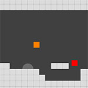
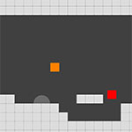

Platformer
https://github.com/pokepetter/ursina/blob/master/samples/platformer.py

# t = time.time()
from ursina import *
from ursina.prefabs.platformer_controller_2 d import PlatformerController2 d
# window.vsync = False
window.borderless = False
app = Ursina()
window.color = color.light_gray
camera.orthographic = True
camera.fov = 2 0
ground = Entity (model ='cube' , color =color.olive.tint(-.4 ), z =-.1 , y =-1 , origin_y =.5 , scale =(1 0 0 0 ,1 0 0 ,1 0 ), collider ='box' , ignore =True)
random.seed(4 )
for i in range (1 0 ):
Entity (model ='cube' , color =color.dark_gray, collider ='box' , ignore =True, position =(random.randint(-2 0 ,2 0 ), random.randint(0 ,1 0 )), scale =(random.randint(1 ,2 0 ), random.randint(2 ,5 ), 1 0 ))
# ground = Entity (model ='cube' , color =color.white3 3 , origin_y =.5 , scale =(2 0 , 1 0 , 1 ), collider ='box' )
# wall = Entity (model ='cube' , color =color.azure, origin =(-.5 ,.5 ), scale =(5 ,1 0 ), x=1 0 , y =.5 , collider ='box' )
# ceiling = Entity (model ='cube' , color =color.white3 3 , origin_y =.5 , scale =(1 0 , 1 , 1 ), y =4 , collider ='box' )
player = PlatformerController2 d()
player.x=1
player.y = raycast(player.world_position, player.down).world_point[1 ] + .0 1
camera.add_script(SmoothFollow(target=player, offset=[0 ,5 ,-3 0 ], speed=4 ))
input_handler.bind('right arrow' , 'd' )
input_handler.bind('left arrow' , 'a' )
input_handler.bind('up arrow' , 'space' )
input_handler.bind('gamepad dpad right' , 'd' )
input_handler.bind('gamepad dpad left' , 'a' )
input_handler.bind('gamepad a' , 'space' )
# test
from ursina.scripts.noclip_mode import NoclipMode2 d
player.add_script(NoclipMode2 d())
app.run()
